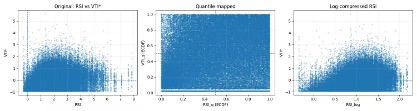

Measuring Traffic Congestion
This part translates street-view traffic observations into a grid-based congestion diagnosis. Rather than treating congestion as traffic volume alone, it compares visual traffic pressure with road supply to identify where mobility stress emerges from demand pressure, supply shortage, or a severe mismatch between the two.
Road Supply Index
Road supply is defined through network density and effective road area. The road network is classified by hierarchy — motorway, trunk, primary, secondary, tertiary, and other roads — so that higher-capacity roads contribute more to the supply score.
Two complementary indicators are calculated for each 250m grid:
- Road Length Density: weighted road length per grid
- Road Area Density: weighted buffered road area per grid


Congestion = Traffic Pressure − Road Supply
Visual Traffic Intensity represents observed street-level traffic pressure. Different vehicle types are weighted to reflect their relative contribution to road space and congestion pressure.
VTI = 0.4 · nmotorcycle + 1.0 · ncar + 2.0 · nbusThe final congestion index compares normalized traffic pressure with normalized road supply:
CI = VTI* − RSI*
Congestion Dynamics Across Weekday and Weekend
Top Congestion Grids and Dominant Congestion Types
The top one-third congestion grids are selected for diagnosis. Instead of assigning one fixed label to each place, the analysis reads congestion as a time-dependent mechanism.
Three diagnostic dimensions:
- Type: demand pressure, supply shortage, or severe mismatch
- Time: when congestion appears during the day
- Day type: weekday versus weekend patterns
This helps identify whether intervention should prioritize demand management, road-space organization, or integrated system improvement.
Weekday–Weekend Congestion Transitions
Transition mapping compares dominant congestion types between weekday and weekend. The goal is not only to locate congestion, but to understand whether stress is persistent, commute-driven, activity-driven, or switching across temporal regimes.
Key transition readings:
- Persistent structural bottlenecks
- Commuting-driven weekday pressure
- Weekend activity concentration
- Temporal switching across day types
- Consistently uncongested or insufficient-data areas